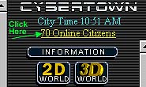

All messages to the security office will be taken very seriously and replied to as quick as possible. False reports will result in a fine of 1000 City Cash being deducted from your Cybertown account.
Emergency Security Request | Non-emergency Security Request
Emergency Security Request:

If you don't have your Instant Message Center open, you can get to it by clicking the Online Citizens link.
Scroll to the bottom of the Instant Message Center and you will find the Security Alert button. Clicking this button will send an alert message to all online security personnel. If none are online it will give you an opportunity to send a single e-mail to all of them.
Non-emergency Security Request:
If you have a Non-emergency Security Request, please leave a message at the Cybertown Security office at: http://www.cybertown.com/home/security and a security representative will get back to you as soon as possible.
Cybertown's Chief of Security is ALASKALAB.